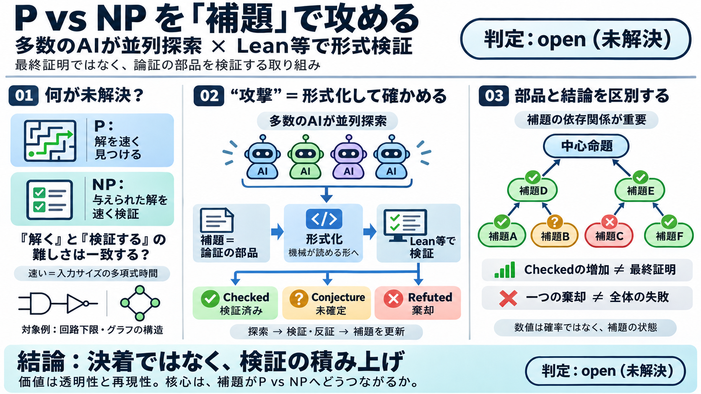

I Spent a Year Asking AI to Solve Math’s Hardest Problem. Here’s What Happened – Communications of the ACM
Where I Am Now I have a complete formalization of the P ≠ NP problem. All major publications have been analyzed and tra…

| 観測 | よくある誤読 | 正しい解釈 |
|---|---|---|
| Checked数が増える | 最終証明が近いと確率的に言える | 補題が形式検証で通った“部品”が増えた |
| refutedが増える | 大局的にP≠NP（またはP=NP）が決まった | その補題がボトルネックかは別途要文脈 |
| 未チェックが多い | 単に努力不足で価値がない | 探索空間の未確定領域（Conjecture/未到達）が残っている |
Where I Am Now I have a complete formalization of the P ≠ NP problem. All major publications have been analyzed and tra…
Don't waste your time trying a formal approach via Lean. (I'm looking at you Dmitry Khanukov) Computational complexity i…
- Uh, speaking of crises, let me get back to P versus NP question Ankur was talking about. Do you think-- how hard of a …
Rules Terms Text to speech [...] Sitemap Open in app Sign up Sign in . I demystify AI using First Principles, Caus…
蘋果近期發表一項具指標性的 AI 研究報告，震撼揭露目前市場上號稱具備「推理能力」的 AI 模型，如 Claude Thinking、DeepSeek-R1、o3-mini，實際上只是進行「進階記憶遊戲」，根本談不上真正的邏輯推理。 為了…